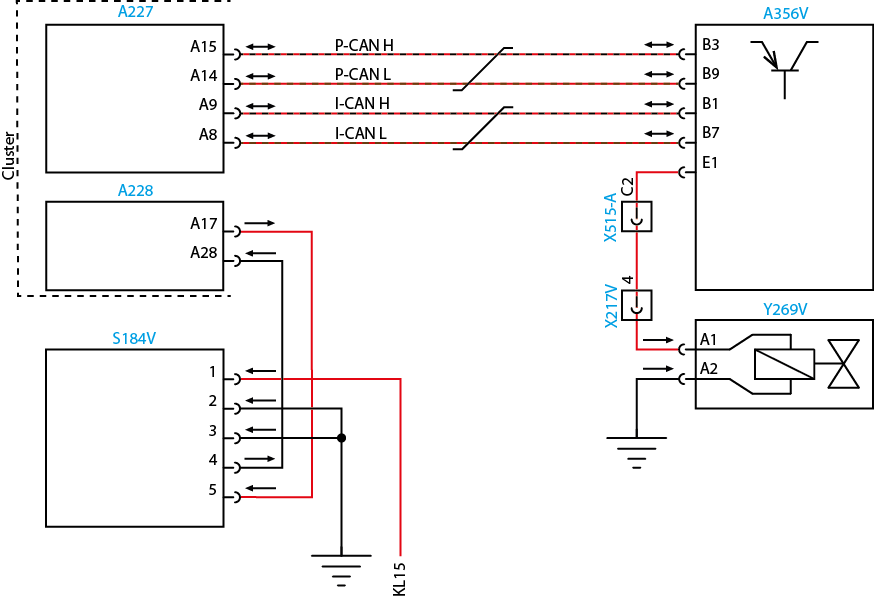

Unidade Lógica (LU) - Worker Euro V
código1841/05
Descrição da falha
Saída da válvula de travamento Interdifferencial - circuito aberto
Causa
Circuito do sistema da válvula de bloqueio entre diferenciais em aberto.
Efeito da falha
Bloqueio não funcionará.
Circuito

Legenda
| A227 | Conector azul 32 vias - Painel de Instrumentos(X1) |
| A228 | Conector verde 32 vias - Painel de Instrumentos(X2) |
| A356V | LU (Unidade Lógica) |
| S184V | Interruptor de acionamento do bloqueio do interdiferêncial |
| X217V | Conector entre os chicotes dianteiro/traseiro |
| X515-A | Conector de interface A (preto) |
| Y269V | Válvula de bloqueio do interdiferêncial |
Avisos
Nota: Leia sempre as Recomendações para Diagnósticos.
|
Verifique os conectores quanto a pinos tortos e oxidados
Passos do diagnóstico de falhas
Etapa 01
Chave de ignição na posição desligada. Meça a continuidade entre o pino 2 da válvula de bloqueio do interdiferêncial Y269V e o ponto de massa do veículo. Existe continuidade?
|
Etapa 02
Repare o chicote elétrico. Vá para a etapa 06.
|
|
Etapa 03
Para fins de teste, substitua a válvula de bloqueio do interdiferêncial Y269V. Conecte todos os conectores. Chave de ignição na posição ligada. Apague os códigos de falha. Teste o sistema quanto ao funcionamento normal. A falha permanece ativa?
|
Etapa 04
Vá para a etapa 06.
|
|
Etapa 05
Para fins de teste, substitua a Unidade Lógica (LU) A356V. Vá para a etapa 06.
|
||
Etapa 06
Conecte todos os conectores. Chave de ignição na posição ligada. Apague os códigos de falha. Teste o sistema quanto ao funcionamento normal. A falha permanece ativa?
|
Etapa 07
Volte à etapa 01 e verifique o sistema novamente.
|
|
Etapa 08
Libere o veículo.
|
| Topo da Página |
|---|